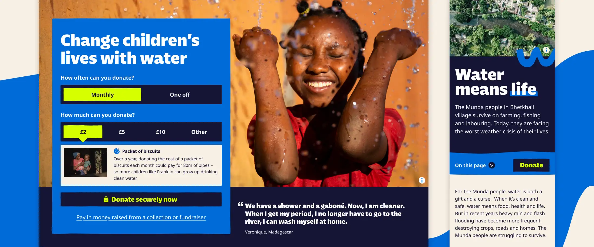
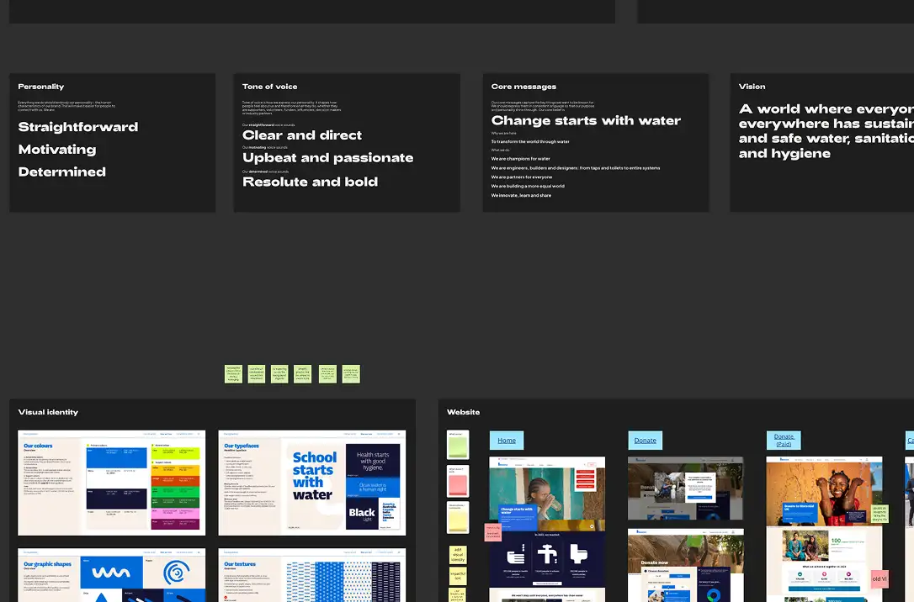
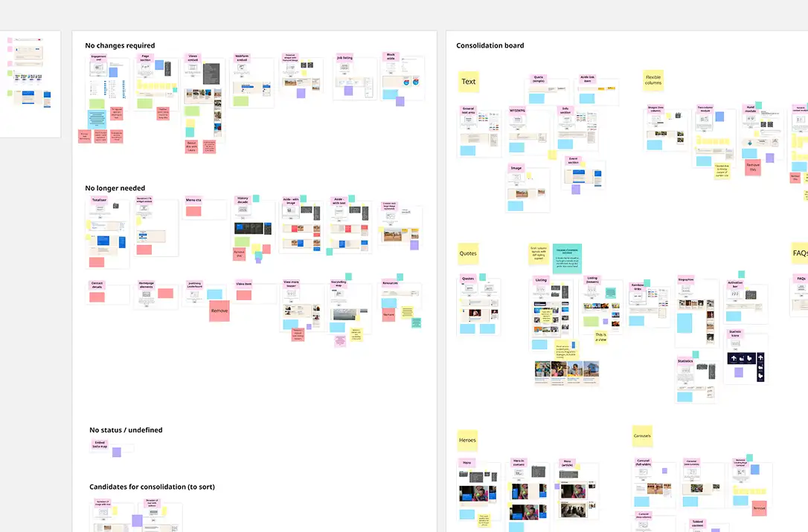
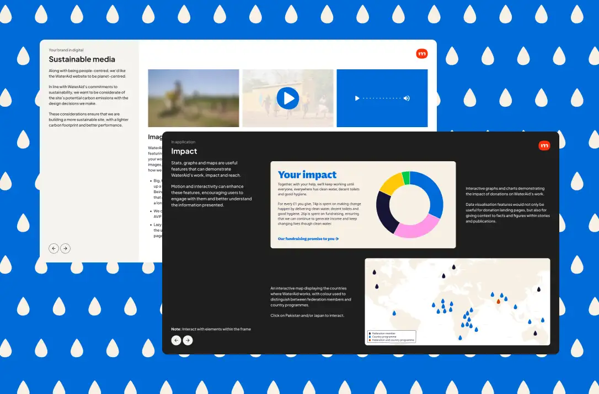
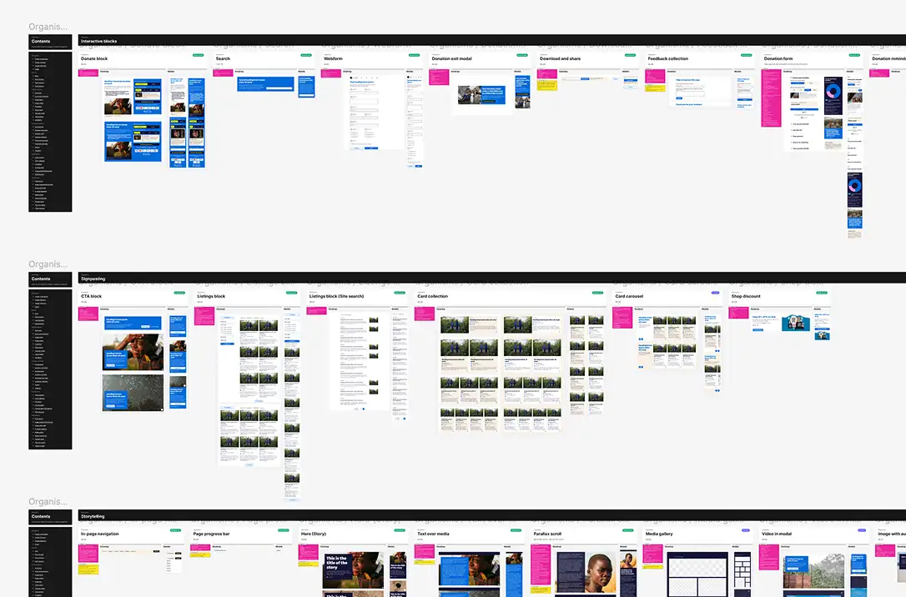

Creative direction
Web UX/UI
Strengthening and future-proofing a mature ecosystem for a global charity working towards a world where everyone, everywhere has clean water, decent toilets, and good hygiene.

As a global charity, WaterAid faces a number of challenges that don’t affect domestic organisations, with varied organisational objectives serving different audiences around the world.
It was important, to at first understand those differences before identifying opportunities and working out an approach to create a unifying website that can serve the organisation as a whole. Key questions included finding out where impact really happens, which changes genuinely matter, and how to build on what already exists and works well.
In addition to overall site improvements, WaterAid had recently undergone a rebrand, evolving a brand that had been established for five years. My role included applying the new brand and visual identity to the digital experience to truly reflect WaterAid’s mission, vision and personality.


I was part of a core team of UI, UX and tech specialists working in partnership with WaterAid’s digital and content teams for about 6 months from scoping and discovery through design and to build and launch in January 2026.
The project was set up with a long-term roadmap to enable a more strategic approach, focusing on the most impactful areas and highest value priorities. Following conversations with the client, and research around the challenges they faced, we established six strategic opportunities. These go beyond simple technical fixes, and encompass wider transformational changes aimed at reducing costs, simplifying workflows and freeing up teams to focus on mission-critical work.

These opportunities included simplifying and unifying the CMS and introducing a new design system to create a more consistent yet flexible website; streamlining site navigation and user journeys for smarter content relationships that guide users toward meaningful action; and boosting storytelling and engagement capabilities, giving content editors more control and making WaterAid’s impact as visible and compelling as it can be.
The latter was a primary focus for the website’s design direction as we looked to reduce the use of third party products, instead moving towards a bespoke, component-based, flexible solution within the CMS. Sustainability is a big consideration for WaterAid and I wanted to ensure the design allows content editors to produce stories which could engage and inspire audiences without relying heavily on rich media as many third party storytelling tools do. This meant working closely with WaterAid’s content teams, analysing current story content and ambitions for future stories, introducing alternative components and aligning around a new approach to be more purposeful with image and video.
